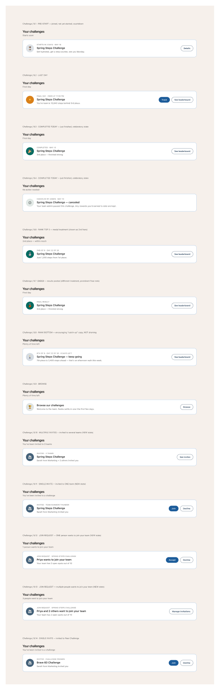

The single-banner challenge module that sits below the data section. Covers active, recently-completed, and edge-case states. Always one banner — when multiple challenges are active, only the most recently engaged-with is featured here and the rest live behind the drill-in.
View in FigmaAll variants share the shell: 56-px disc icon on the left, body in the middle (eyebrow + title + meta), drill-in or action on the right.

TEAM CHALLENGE, title Spring Steps Challenge, meta "Day 22 of 30 · Currently 4th". Trophy icon. Whole card is the tap-target.Completed · May 13, title same, meta "3rd place — finished strong" (or similar finish line). CTA on the right reads See leaderboard instead of the drill-in chevron.<section class="section" aria-labelledby="challenge-title">
<div class="section-head">
<h2 id="challenge-title" class="heading-6">Your challenge</h2>
</div>
<div class="challenge">
<div class="banner-icon banner-icon--challenge">
<span class="fa-icon" aria-hidden="true"></span>
</div>
<div class="challenge__body">
<div class="eyebrow ink-soft">Team Challenge</div>
<div class="heading-6">Spring Steps Challenge</div>
<div class="body-3 challenge__meta">Day 22 of 30 · Currently 4th</div>
</div>
<a class="challenge__link" href="/challenges/spring-steps">
<span class="visually-hidden">Spring Steps Challenge — details</span>
</a>
</div>
</section>
. For "no challenge" empty state, swap for a different glyph (or remove the icon altogether)..challenge__link makes the whole card tappable — keep the visible body text as the accessible name; the link's visually-hidden label is for screen readers.